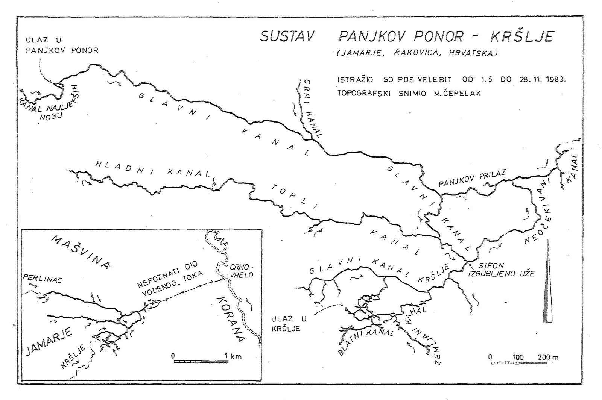

Velebitaši opet u Panjkovom ponoru
Špiljski sustav Panjkov ponor-Muškinje nakon podosta godina opet je bio domaćin masovnije posjete velebitaša i to sa svrhom.

Špiljski sustav Panjkov ponor-Muškinje nakon podosta godina opet je bio domaćin masovnije posjete speleologa i to sa svrhom. Ovaj treći najdulji sustav u Hrvatskoj (13.052 m) istražuje se od još od davne 1983. godine kada su u njega prvi puta ušli Velebitaši predvođeni Marijanom Čepelakom, ali potom i speleolozi DISKF-a, odnosno SO PD SUTJESKA, koji su glavninu svojih istraživanja proveli u drugoj velikoj špilji sustava - Muškinji, još znanoj po imenima / toponimima; Varićakova ili Kršlje. Do kraja te godine, zaključenjem istraživanja, Marijan Čepelak objavljuje nacrt, zapravo trasirkama precizno snimljeni poligonski vlak sustava sa duljinom od 9.352 metra.
[caption id="attachment_2360" align="alignnone" width="2622"] Tlocrtni prikaz sustava nakon istraživanja 1983. godine[/caption]Velebitaška istraživanja tu prestaju, ali u godinama kasnije nastavljaju raditi DISKF (uključivo i ekspediciju 1988. godine), tako je iz njihovih istraživanja Maliganovoj duljini pribrojeno i 573 metra Zelenog sifona i kanala iza (kasnijim revidiranjem, 2010. to je 'spušteno' na 553 metra) te nakon njih, nakon što kao društvo prestaju postojati od 2002. godine kroz četiri veća ekspedicijska istraživanja nastavljaju Dinaridi-DISKF. U velikom broju speleoronilačkih akcija, istraženi su novi metri sustava iza glavnog izlaznog sifona, iza Zelenog sifona u Muškinji te u Crnom vrelu koje je završetak cijelog sustava dokazan bojenjem, ali još uvijek ne i fizičkim prolaskom. Ukupno je bilo pet velikih ekspedicija, prva 1988. (voditelji Tihomir Kovačević i Mladen Garašić), a zatim četiri velike međunarodne speleoronilačke ekspedicije 2002., 2003., 2010. i 2011. godine, pod vodstvom Tihomira Kovačevića. Na kraju svih ekspedicija, duljina sustava Panjkov ponor-Muškinje popela se na danas poznatih 13.052 metra. Iza glavnog izlaznog sifona ukupno je istraženo i topografski snimljeno 3.147 metara (2002., 2003. Alan Kovačević i Slobodan Meničanin, 2010., Alan Kovačević i Marjan Prpić, 2011. Alan Kovačević i Tomislav Flajpan)
[caption id="attachment_2381" align="alignnone" width="2355"] Na ulazu u Panjkov ponor 1983., s lijeva Marijan Čepelak, Darko Cucančić i Robert Erhardt[/caption]Unatoč tim velikim i masovnim istraživanjima, činjenica je da sustav Panjkov ponor-Muškinje još uvijek nema kompletirani i objedinjeni nacrt, a taj problem su u međusobnim razgovorima DDISKF-ovci i Mihovilci započetim još 2010. na Skupu speleologa u Biogradu, te 2011. na šibenskom festivalu Terraneo, odlučili riješiti i krenuti sa novim topografskim snimanjem cijelog sustava - od početka pa do Izlaznog sifona. Trebalo je proći još dvije godine da se stvar pokrene voljom Mihovilaca koji su 2013. krenuli sa crtanjem, prvo iz Varićakove, a onda i iz Panjkove. U nekoliko navrata, nakon što ih je zaustavila voda i bujice, uspjeli su nacrtati 2. 947 metara, te na kraju ukupno 3600 m. U tome su sudjelovali: Aida i Teo Barišić, Mario Blatančić, Zlatan Trokić i Goran Rnjak (SOSvM), Dina Kovač (SOV) i Marin Glušević (SOM). Konačno, nakon tolikih godina, i velebitaši su se vratili u Panjkovu te krenuli crtati od mjesta gdje su stali Mihovilci. Iako je plan bio otići do izlaznog sifona i crtati prema natrag, visoka voda na polusifonu spriječila ih je u tome, no ipak su, unatoč smrzavanju, uspjeli nacrtati više od 900 metara u glavnom kanalu.
_______________________________________________________________ Kako im je bilo, pročitajte dalje u dojmovima Pave Vidić, literarno ponešto okljaštrenom zbog utjecaja hladne vode :). I na kraju, linkovi za one koji uvijek žele znati više: SO HPK Sv. Mihovil: Topografsko snimanje sustava Panjkov Ponor-Varićakova DDISKF: MSRE Panjkov Ponor 2010., rezultati ekspedicije _________________________________________________________________KAOS U KRŠLJI Napisala: Pava Vidić Fotografije: Pava Vidić i Dalibor Paar
Skreni u Rakovici prema Novoj Kršlji, skroz do prekida asfalta pa nastavi po takvom putu do raskrižja, skreni lijevo pa desno i eto te do Panjkovog ponora. Obuci neopren i šlapice, a preko toga korduru i čizmice. Hodaj, plivaj, plutaj do kraja. Ovaj put kraj je bio do prve špage. Voda nas zeznula i potopila prolaz. Voda nas još jednom zeznula i smočila lasere posebno stavljene u bačvice da se ne smoče.Od planirane četiri crtaće ekipe ostadoše dvije plus jedna foto-ekipa. Nije nas spriječilo da nacrtamo preko 900 metara. Navečer kasno izlazimo, vatra već gori. Napokon grijanje nakon hlađenja u ledenoj vodi cijeli dan. Dalibor s obitelji je već otišao, a ostali smo Luka (H), Ana, Tea, Vito, Jonathan, Srđana, Antonela, Čajko, Marina i ja. Rakovac nam se pridružio uz vatru nakon lutanja i čudnih glasova po šumi. Nije pazio, Lukine instrukcije su bile točne. Svanulo jutro. Nema šanse da opet oblačimo mokre neoprene. Idemo u Veljun na Koranu oprati opremu, sunčati se i odmarati. Nekima nije bilo dosta hladne vode pa su i zaplivali. Grupna fotografija za kraj, svi u aute i pokret za Zagreb.
Zaključak: predivno, moramo se vratiti, ima još puno za crtati. I bolje zaštiti lasere!
[gallery ids="2382,2381,2377,2364,2376,2375,2374,2373,2371,2370,2369,2368,2367,2366,2383,2372,2365" type="rectangular"]